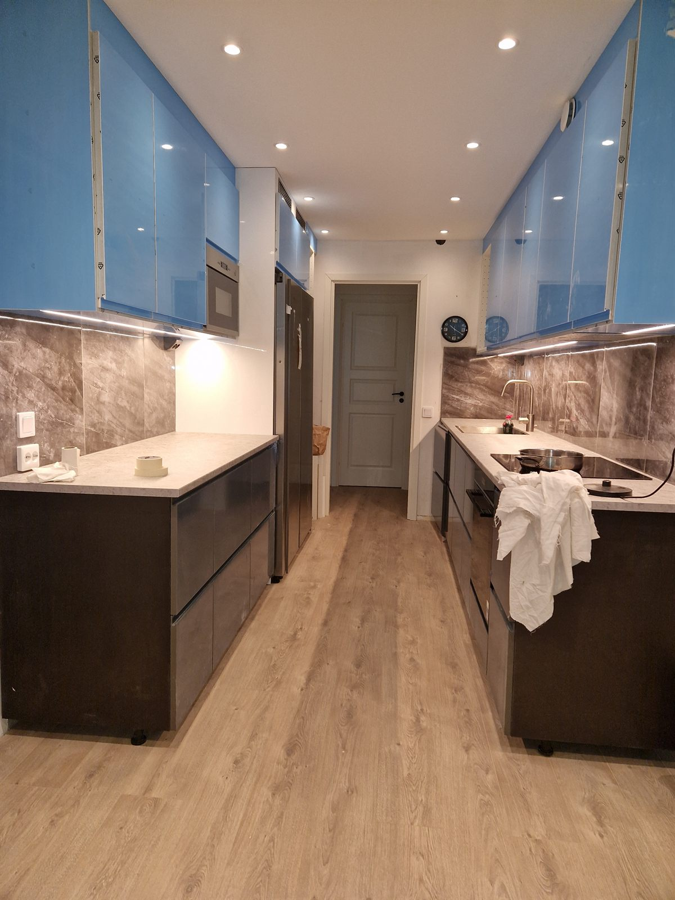
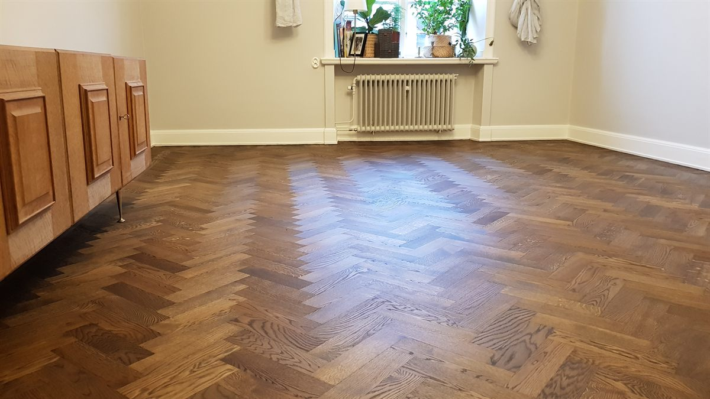
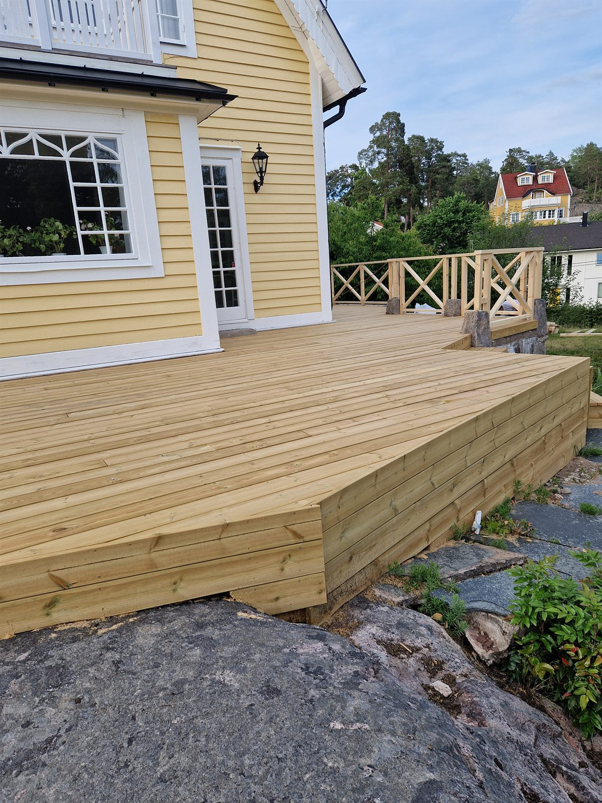
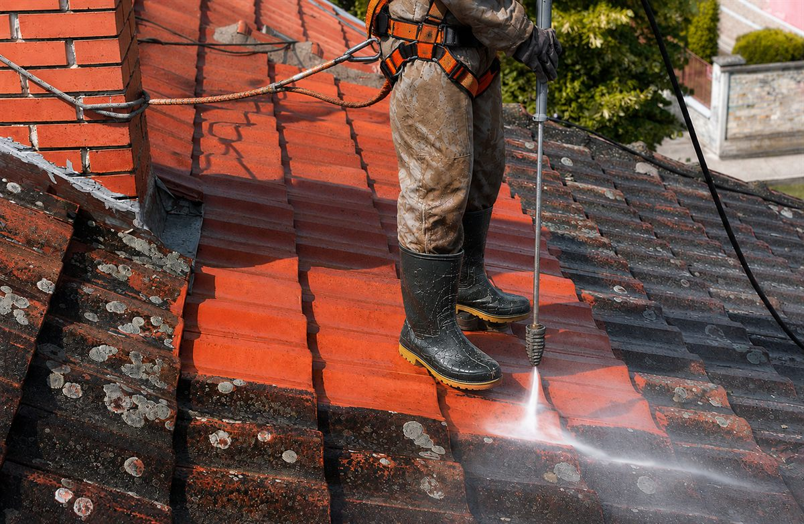
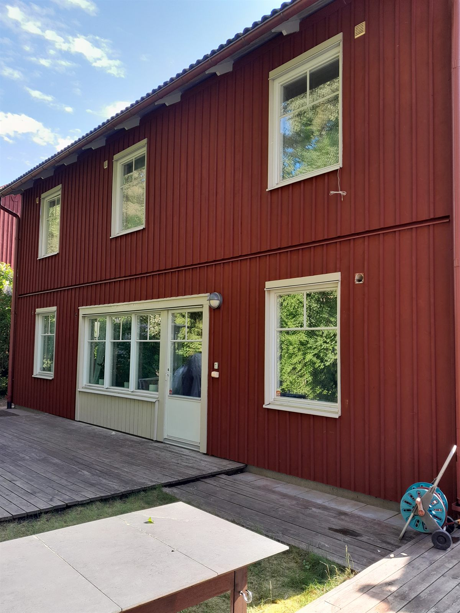

Måleri & tapetsering
Jämna ytor och färgval som lyfter helheten
Invändig och utvändig målning samt tapetsering med jämna ytor, hållbara material och färgval som lyfter helheten.
Byggfirma i Stockholm med omnejd · sedan 2012
JOHAMAR BYGG AB hjälper privatpersoner, företag och fastighetsägare med renovering, måleri och byggservice. Tydliga offerter, noggrant utförande och smidig kontakt från första samtal till färdigt projekt.
Kostnadsfritt och utan förbindelse · Svar inom 24 timmar
5,0 på Google · läs omdömenVåra tjänster
Vi tar hand om både mindre uppdrag och kompletta projekt med samma noggrannhet, struktur och respekt för din tid.
Jämna ytor och färgval som lyfter helheten
Invändig och utvändig målning samt tapetsering med jämna ytor, hållbara material och färgval som lyfter helheten.

Funktionella och eleganta kök
Praktiska och eleganta kök där snickeri, ytskikt, montering och detaljer samspelar för en hållbar helhet.

Precision och slitstyrka i varje golv
Slipning, läggning och byte av golv för bostäder och lokaler med fokus på precision och slitstyrka.

Utemiljöer byggda för svenskt klimat
Måttanpassade altaner och terrasser byggda för svenskt klimat, lång livslängd och en inbjudande utemiljö.

Rena, välskötta och hållbara tak
Skonsam rengöring och behandling av tak som förlänger livslängden och håller fastigheten representativ.

Skydda och förnya ditt hus
Renovering och målning av fasader som skyddar, förnyar och höjer värdet på din bostad eller fastighet.
Om oss
JOHAMAR BYGG AB har sedan 2012 hjälpt kunder i Stockholm med omnejd att genomföra genomtänkta bygg- och renoveringsprojekt. Vi kombinerar erfarna och certifierade hantverkare med tydlig kommunikation, realistiska tidsplaner och ett resultat som håller över tid.
Med god lokalkännedom i Stockholm med omnejd tar vi ansvar från första rådgivning till sista genomgång – med kvalitetsgaranti på utfört arbete.
Prata med oss om ditt projektVarför välja oss
Vi väljer material noggrant, arbetar metodiskt och lämnar aldrig ett jobb halvfärdigt. Resultatet ska se bra ut inte bara i dag – utan om tio år.
Tydligt avtal, realistisk tidsplan och löpande uppdateringar via din föredragna kanal. Du vet alltid var vi är i processen – ingen otrevlig överraskning.
Sedan 2012 har vi genomfört projekt av alla storlekar i Stockholmsregionen. Erfarenheten syns i detaljerna – och i de kunder som anlitar oss om och om igen.
Du pratar direkt med ansvarig hantverkare, inte en mellanhand. Vi svarar snabbt, förklarar tydligt och håller dig informerad under hela projektet.
Vi lyssnar på dina önskemål, din budget och din tidsram – och tar fram den lösning som passar din situation bäst. Inga standardpaket, alltid skräddarsytt.
Vi betjänar kunder i hela Stockholm med omnejd. Lokal kännedom ger snabbare start och smidigare projekt.
JOHAMAR BYGG AB hjälper privatpersoner, företag och fastighetsägare i hela Stockholmsområdet. Vi utför renoveringar, måleri, köksrenoveringar, golvarbeten, altanbyggen och fasadrenoveringar i följande områden:
Jobbar du utanför dessa områden?
Kontakta oss – vi hittar alltid en lösning.
Vår arbetsprocess
Från första kontakt till färdigt projekt — en tydlig och trygg process där du alltid vet vad som händer härnäst.
Vi lyssnar på dina behov och önskemål, diskuterar projektet och svarar på alla dina frågor utan kostnad.
Vi tar fram en tydlig offert och en genomtänkt projektplan med tidsram och material — inga dolda kostnader.
Vårt team utför arbetet med precision, kvalitetsmaterial och löpande kommunikation — alltid i tid och enligt plan.
Vi går igenom projektet tillsammans, säkerställer att allt möter vår kvalitetsstandard och att du är helt nöjd.
Våra projekt
Följ vårt arbete i realtid. Här visar vi våra senaste bygg- och renoveringsprojekt i Stockholm med omnejd – kök, måleri, golv, altaner, tak och fasader – direkt från vårt Instagram. Klicka på en bild för att se den större.
Galleykök med nya luckor, bänkskivor, stänkskydd och infälld belysning.
Måttbyggd trätrall anpassad efter tomtens nivåer och svenskt klimat.
Invändig målning med jämna ytor och en hållbar, ren finish.
Slipad och oljad fiskbensparkett som återfått sin lyster.
Renoverad och målad träfasad som skyddar mot väder och förnyar huset.
Högtryckstvätt och behandling av tegeltak som tar bort mossa och påväxt.
Kundomdömen
Kommunikationen var tydlig från första samtalet. Arbetet blev klart enligt plan och resultatet känns genomarbetat.
Vi fick snabb hjälp med måleri och byggservice i lokalen och uppskattade särskilt ordningen på arbetsplatsen.
Köket blev precis som vi ville ha det. Seriöst bemötande, bra rådgivning och fin finish.
Frågor och svar
Efter en kort genomgång kan vi ofta återkomma snabbt med en första bedömning. Större projekt kräver platsbesök och mer detaljerad planering.
Vår primära servicezon är Stockholm med omnejd. Kontakta oss gärna om du vill veta om vi kan hjälpa till på din adress.
Ja, vi hjälper till med allt från mindre byggservice och underhåll till kompletta renoveringar av bostäder och lokaler.
Ja, du kan använda WhatsApp-knappen på sidan för snabb kontakt och första dialog om projektet.
Kontakt
Fyll i formuläret eller kontakta oss direkt. Vi återkommer med frågor, rådgivning och nästa steg för en tydlig offert.